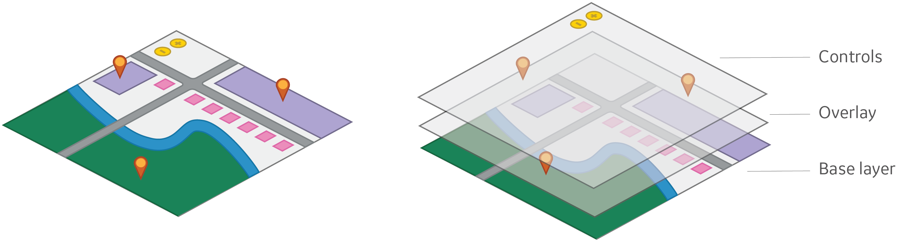
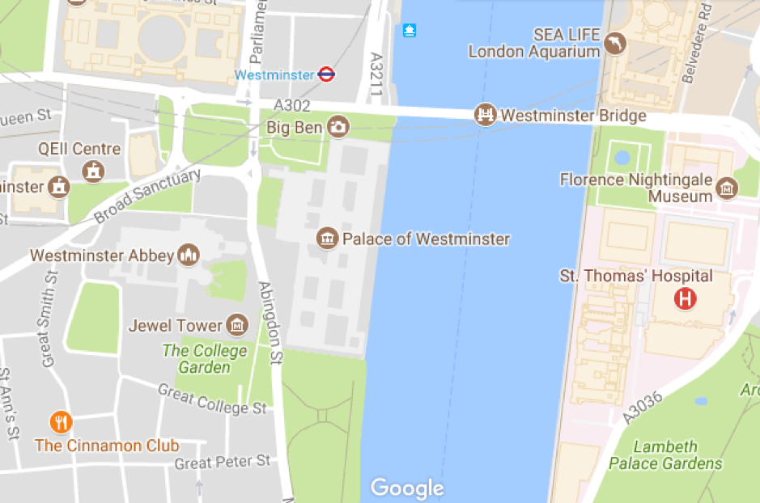
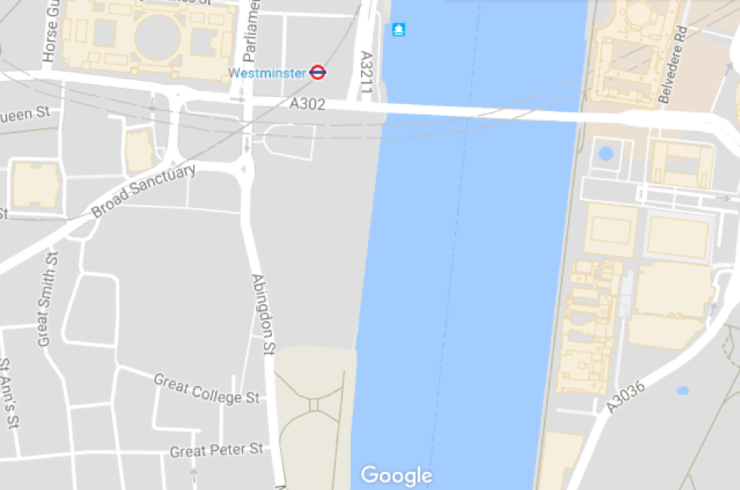
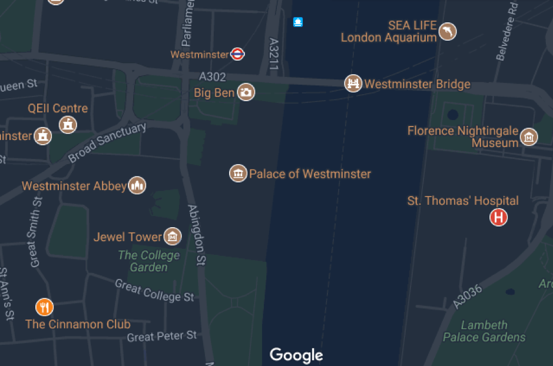

Developing with px-map
Overview
Px-map is a lightweight framework for building interactive maps with web
components and Polymer. The framework includes a base mapping component (<px-map>)
that can be used with many different subcomponents to solve common mapping UI
problems, like plotting geographic data.
The current major release of px-map uses the open source Leaflet library to support displaying a map with base tiles and geospatial overlays. Future iterations of the component may offer the ability to use a different library in place of Leaflet, while keeping the same basic API.
Out of the box, px-map includes the basic things needed to draw and plot data
on an interactive map. It is also extensible — development teams are encouraged
to build their own subcomponents that add features needed for their application,
and any open source Leaflet plugin can be easily converted to be a px-map custom
layer.
Basic concepts
Use the map to plot geographic data such as individual assets or clusters of assets and information about them. The data concepts underlying the map include:
- Base layer: The base layer of a map renders tile images that include information such as streets, mountains, and national parks. For example, satellite, terrain, and map view are all different base layer styles.
- Overlay: Information that is put on top of a map's base layer that is specific to the purpose of that map. For example, traffic data, bike lane information, or location markers might be set as an overlay on a map.
- Control: A map layer that allows the user to manipulate the map, e.g. by zooming in, out, or to their current location.
- CRS: A CRS is a coordinate reference system (also known as a coordinate relationship system or coordinate projection system) used to project geographical points into pixel coordinates.
Graphic: map layers
Subcomponents
Base map
<px-map>: Draws the underlying map, sets location/zoom and notifies updates when the user interacts with the map, enables and disables interactions, orchestrates subcomponents
Tile layers
<px-map-tile-layer>: Calls a tile service API to fetch underlying tile images for the map<px-map-tile-layer-bing>: Calls the Bing Maps API to fetch underlying tile images for the map<px-map-tile-layer-google>: Calls the Google Maps API to fetch underlying tile images for the map<px-map-tile-layer-wms>: Displays WMS services as tile layers on the map.
Overlay/visualization layers
<px-map-layer-geojson>: Draws GeoJSON data as vectors on the map<px-map-layer-group>: Groups related overlays together to allow for bulk interactions (e.g. hide all in the group)<px-map-marker-static>: Draws a marker that shows the state of a point/asset (e.g. with color)<px-map-marker-symbol>: Draws a marker with an icon that shows the state of a point/asset<px-map-marker-locate>: Draws a marker that represents the user's location<px-map-marker-group>: Draws many markers in clusters, useful for visualizing thousands of points that can be dynamically updated
UI components
<px-map-popup-info>: Binds a popup that can include text or an image to a marker<px-map-popup-data>: Binds a popup that can include text and key/value data to a marker
Controls
<px-map-control-zoom>: Adds zoom buttons the user can tap to zoom in or out of the map<px-map-control-scale>: Adds a scale that shows the distance of an area on the map in miles/kilometers<px-map-control-locate>: Adds a button the user can tap to locate themselves on the map and center the map on their location
Set up in your app
Choosing a CRS
A coordinate reference system (CRS) is framework for defining real-world locations
that attempts to reconcile the geoid shape of the earth with the two-dimensional
plane of a map. The CRS can only be set once before the map is first initialized.
Px-map defaults to the most common web mapping projection EPSG 3857.
Most use cases do not require changing the default CRS being used by px-map,
and we strongly recommend using the default. If your customers give you data in
a different projection system, you can either (1) re-project that data to our CRS
(recommended), or (2) set the CRS on the map to the same one being used by your
data with the crs property on px-map.
Choosing a base map provider
Typically, a map will display your data against a base map, such as a road map or satellite imagery. This base map is a set of map tiles that are pieced together by the map to provide a seamless backdrop. Despite the almost ubiquitous presence of base map tiles in maps, access to use them is not free. The data contained within the base map tiles is generally copyrighted and requires a fee for use. Large scale map providers like Google and Bing provide free access to map tiles for development purposes, but there is usually a usage limit which prevents developers from deploying them in production applications.
Even for data providers like OpenStreetMap (OSM) that provide access to copyright-free data, there is usually a charge to cover the costs of maintaining the tile servers that manage and provide the individual tiles.
Px-map provides support for OSM, Bing, and Google, provided that you have an appropriate usage key. Fees are typically calculated based on the number of tile requests your application will make over a given period, normally a month. Budgeting for this expense can be difficult as you need to understand the number of map tile requests an individual user is likely to make per month and extrapolate this based on the number of users you expect to use the app per month. As the tiles are a fixed size, the size of the map in the application will dictate the number of tiles needed to cover it.
It is also worth noting that map tile providers may impose additional constraints on how you can use the map tiles in your application. The providers may prevent you caching the tiles when the device is offline, or require that you display their attribution within the map. Always make sure you review and understand the terms and conditions of your agreement with the map tile provider.
Base map styling
Base map providers typically have more than one base map style, so you can choose one that shows the information that you need, styled in a way that shows off your data.
Standard Google Maps style:
Google Maps with points of interest turned off:
Google Maps with a dark theme:
Tile service options
Most px-map demos use the OpenStreetMap public tile service to serve map tiles
(e.g. https://{s}.tile.openstreetmap.org/{z}/{x}/{y}.png) with the
px-map-tile-layer subcomponent. This tile service is used for demo purposes only.
You should not use this tile service for production applications; you will
need to implement or purchase your own tile service.
The OpenStreetMap Tile Usage Policy details specific restrictions for developers using their public tile service. These restrictions include the following provision: "Heavy use (e.g. distributing an app that uses tiles from openstreetmap.org) is forbidden without prior permission." If you choose to use the OpenStreetMap service for demos or development, you should likely replace the service URLs when your app is shipped to production.
The following list of companies provide tile service APIs that may be free or
paid and should be compatible with the px-map-tile-layer (note that these are
not endorsed, but just offered as options):
You can also use the px-map-tile-layer-bing component to load map tiles from
the Bing API, the <px-map-tile-layer-google> component to load map tiles from
the Google Maps API, or the <px-map-tile-layer-wms> component to display WMS
services as tile layers on the map.
Using MapBox tiles
Mapbox allows users to create a theme for their base tiles so that the map fits seamlessly with the rest of the application design. However, Mapbox assumes you’re using vector tiles, whereas px-map requires raster tiles. You can still use Mapbox tiles with px-map, you’ll just need some additional information.
When you create a theme in Mapbox Studio and turn that theme into a tile set,
you’ll then need to use the id of that tile set to get the equivalent raster
tiles. Then, you’ll want to use a URL template like this for px-map-tile-layer:
https://api.mapbox.com/styles/v1/mapbox/{id}/tiles/{z}/{x}/{y}?access_token={accessToken}
where id is the id of your Mapbox tile set you just created.
Example: creating a px-map in your application
Geospatial Data Formats
Geospatial data is available in many different formats. This can make it confusing to choose which data format to use in your application. Some formats are open, while others are proprietary to specific vendors. Some formats express data in plain text, while others are encoded and require specific libraries to translate them. One geospatial data format that has gained popularity in recent years is GeoJSON. GeoJSON is a very simple open format that expresses data in plain text and has been adopted by a wide range of vendors and tools. Lots of data sources are available as GeoJSON.
Px-map doesn’t prescribe what data format its developers should use, but GeoJSON has many advantages, and there is dedicated support for it within px-map.
GeoJSON is a JSON-based format used to represent a variety of geographic data
structures. You can use GeoJSON to represent geometry (e.g. points, lines, areas),
features, or feature collections. GeoJSON is always composed of a single object,
and that object must have a member with the name "type." The type refers to the
type of GeoJSON object and must be one of: "Point", "MultiPoint", "LineString",
"MultiLineString", "Polygon", "MultiPolygon", "GeometryCollection",
"Feature", or "FeatureCollection".
Geometry Objects
All Geometry objects (aside from a "GeometryCollection") must have a member
with the name coordinates, the value of which is an array (or array of arrays)
of latitude and longitude coordinates in [lng, lat] order.
- Point: A Point is a single point on a map which has no area and is defined by its latitude and longitude coordinates, e.g.:
- LineString: A LineString is a line between two or more points on a map and is defined by an array of two or more latitude and longitude coordinate arrays (positions). A LineString can be self-crossing, and it has no area.
- Polygon: A Polygon represents an area on a map and is defined by an array of four or more positions. Note that the first and last positions MUST be identical, e.g.:
Feature Objects
A Feature allows you to describe a Geometry with a set of properties. A Feature
object must have the type "Feature", as well as geometry and properties
members. E.g.:
Feature Collection Objects
A Feature Collection is simply a collection of individual Features. A Feature
Collection object must have the type "FeatureCollection", as well as member
with the name "Feature" whose value is an array of Feature objects, e.g.:
See the GeoJSON spec for more guidance on generating valid GeoJSON, or read more about the basic concepts behind GeoJSON.
Defining px-map-marker-group data
The data attribute on px-map-marker-group expects a GeoJSON feature collection
with specific settings configured to draw each marker.
FeatureCollection Format
The root JavaScript Object passed to the data attribute should be a
FeatureCollection object with the following keys/values:
- {String}
type: Must be 'FeatureCollection' - {Array}
features: An array of feature objects
The feature collection should be formatted like this:
These are required settings. Not including them or mis-formatting them will result in your marker group failing to draw. (An error may be logged to the console with a description of the issue if it is found. Some formatting issues may not be caught and cause a silent failure or an exception to be raised.)
Feature format
Each entry in the FeatureCollection features array should be a JavaScript Object formatted as a Feature with the following keys/values:
- {String}
type: Must be 'Feature' - {Number}
id: A unique numeric ID. If the feature is changed, it should keep its ID. No other features in the collection should have the same ID. - {Object}
geometry - {String}
geometry.type: Must be 'Point' - {Array}
geometry.coordinates: a pair of coordinates in[lng,lat]order - {Object}
properties - {Object}
properties.marker-icon: Settings to configure a marker icon - {Object}
properties.marker-popup: [OPTIONAL] Settings to configure a marker popup
For example, here is a feature that is drawn with a "static" marker icon (from px-map-marker-static):
Defining the marker icon
The properties.marker-icon object should describe the type of marker
icon that should be drawn and the settings for that marker icon.
Define the marker icon base using the properties.marker-icon.icon-base property.
Choose from any of the built-in markers provided with px-map:
- 'static-icon'
- 'symbol-icon'
To configure the icon, pass additional settings in the format
properties.marker-icon.icon-[SETTING] in dash case. For example,
this would configure the feature to use a "symbol" marker icon
with a briefcase symbol and the warning color:
See the API documentation pages
for the px-map-marker-* components for more information on what markers icons
and settings are available.
The icon-type is special
The properties.marker-icon.icon-type property is special and is used for more
than configuring the type setting of your chosen marker. This setting also defines
the color this marker will be represented as in a cluster. See the colorsByType
property documentation
for more information on choosing your own colors for each type. By default, the
following colors will be used:
- 'unknown': gray
- 'info': blue
- 'warning': yellow
- 'important': red
Binding a popup
Popups can also be bound to individual markers inside the marker group. The popup will be opened when the user clicks on the un-clustered marker.
(It will not open if the user clicks on the cluster icon that contains the marker. Popups cannot be bound to cluster icons.)
Use the properties.marker-popup object to describe the type of popup that should
be attached and the settings for that popup.
Define the popup base using the properties.marker-popup.popup-base property.
Choose from any of the built-in popups provided with px-map:
- 'info-popup'
- 'data-popup'
To configure the popup, pass additional settings in the format
properties.marker-popup.popup-[SETTING] in dash case. For example,
this would configure the feature to use an "info" popup with a title
and description text:
Styling px-map-layer-geojson GeoJSON data
There are two ways to style the features that the px-map-layer-geojson draws.
To style all the features for the entire layer, use the featureStyle attribute.
To style each feature individually, add a style object to the feature's
properties. The following style options are available:
- {Boolean}
stroke: [default=true] Set to false to disable borders on polygons/circles - {String}
color: [default=$primary-blue] Color for polygon/circle borders - {Number}
weight: [default=2] Weight for polygon/circle borders in pixels - {Number}
opacity: [default=1.0] Opacity for polygon/circle borders - {Boolean}
fill: [default=true] Set to false to disable filling polygons/circles - {String}
fillColor: [default=$dv-light-blue] Color for polygon/circle fill - {Number}
fillOpacity: [default=0.4] Opacity for polygon/circle fill - {String}
fillRule: [default='evenodd'] Defines how the inside of a shape is determined - {String}
lineCap: [default='round'] Defines the shape to be used at the end of the stroke - {String}
lineJoin: [default='round'] Defines the shape to be used at the corner of a stroke - {String}
dashArray: [default=null] Defines the stroke dash pattern - {String}
dashOffset: [default=null] Defines the distance into the dash to start the dash
Handling large volumes of data
Px-map can handle large volumes of data, but there are limits. As you begin to approach these limits you may notice that the map takes longer to load data, or that panning becomes jerky. This is because there is overhead associated with loading data into the DOM and transforming its location when panning and zooming.
Requesting data with a bounding box query
Rather than requesting all of the data for the entire map, one method to minimize the effects of load times is to request just the data that is visible within the current map bounds, i.e. a bounding box query. This approach has a few requirements:
- The resource providing the data must be able to accept bounding box queries and return the data in a performant way. Retrieval and transfer of data has the biggest impact on the perceived performance of the map, so the underlying architecture needs to be able to get the data to the client as quickly as possible to ensure a responsive user experience. Therefore, the data storage will require some form of spatial indexing, such as that provided by Predix's Intelligent and Dynamic Mapping Services.
- Your Predix app code will have to calculate the current bounds of the map and pass these through as part of the request for new data. This can be done by directly accessing the Leaflet.js methods.
- When the data is returned, the existing data should be removed from the map and the new data added.
Limiting data returned to the client
Another point to consider is what data to transfer to the client. There is a temptation to return all the data associated with an object, as it simplifies the display of data within popovers. However, limiting the returned data to just the geometry and those properties required for styling can dramatically reduce the amount of data being transferred to the client and speed up response times. When zoomed out, the visible area on the map naturally covers a much larger area than when it is zoomed in. This means that a bounding box query is likely to return a larger number of objects, possibly overwhelming the client and the user. It is often necessary to restrict the bounding box query to specific collections when zoomed out, and to gradually turn on more collections as the user zooms in. This requires the storage of the data to be considered as part of the map development process, as display needs may impact the design of the storage solution.
Example: displaying additional map data as the user zooms in
The following image shows a zoomed-out map displaying just substation locations and high voltage conductors in an electrical network:

When the user zooms in, transformers and medium voltage conductors are made visible:

When the user zooms in further, switches, circuit breakers, and low voltage conductors are made visible as well:

Rendering objects directly on the HTML canvas
If, after all these steps have been taken, the performance of the map still does not meet your needs, then you may want to consider bypassing the Leaflet rendering code that uses DOM elements to display and track the location of objects, and instead, render the objects directly on an HTML canvas. There is a lot of development effort involved in doing this, as you not only have to reimplement the rendering behavior but also the ability to determine what, if any, objects the user has clicked on in the map. However, this approach will give you the best performance with large volumes of data.
Rendering data in a specific order
By default, Leaflet.js uses three DOM elements -- points, lines, and areas -- for rendering the bulk of the objects on the map based on their geometry. Points are rendered on top of lines, and lines are rendered on top of areas. This basic approach works most of the time, but there are instances when the map requires a specific rendering order.
In the following map, it was important to ensure that the transformers (blue triangles) were rendered on top of all the other point objects:

Leaflet.js would have rendered all the points as part of the same DOM element, in the order that they were added to that element. As the data is returned asynchronously, the rendering order is likely to be different every time the map is drawn.
When more control of the rendering order is required, it is possible to add the data as Leaflet.js custom panes. Custom panes can be created with their own z-index, which can be used to force a specific rendering order. For complicated data like an electrical network, it may be necessary to have specific custom panes for each object type.
Other features
Dropping a marker at the user's current location
Use the px-map-marker-locate component together with the px-map-control-locate
component to automatically find and set the latitude and longitude of the marker
to the user's current location:
Custom marker colors and types
The default px-theme includes colors defined for map markers of types 'info', 'warning', 'important', and 'unknown'. To change these default colors, you can use the following CSS style variables:
In addition to these four default icon types, px-map allows you to set a custom type on a marker, in the format 'custom-n'. 'custom-n' is a custom color defined by the developer. Custom types may be defined from 'custom-0' through 'custom-100' and must be defined consecutively with no breaks between numbers. Custom types can be defined in one of two ways:
1. Define custom-color CSS style variables in your HTML
2. Set the colorsByType property on <px-map-marker-group>
Styling px-map-marker-symbol custom icons
Use the icon attribute to add a custom icon to the px-map-marker-symbol component.
If nothing is specified for icon, the icon will default to a star (px-nav:favorite).
Px-icons will work out of the box, but if you would like to style them or use an icon from an icon set other than px-icon-set, you can use the following CSS style variables to set the icon's stroke color, stroke width, and fill color:
For example: